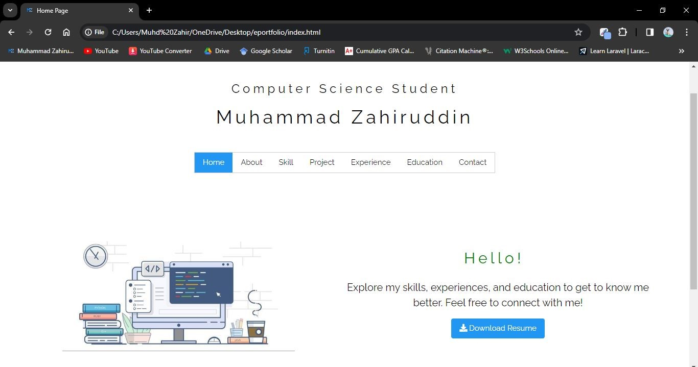
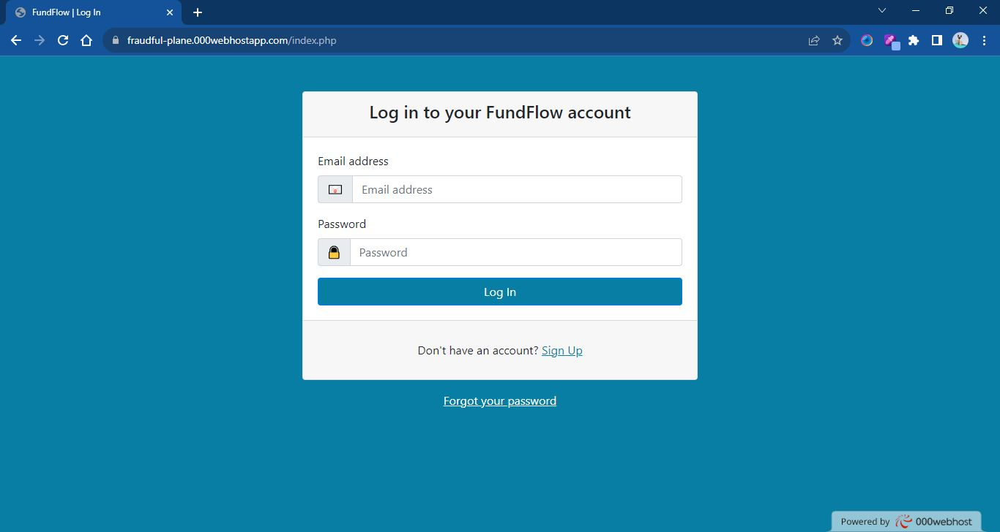
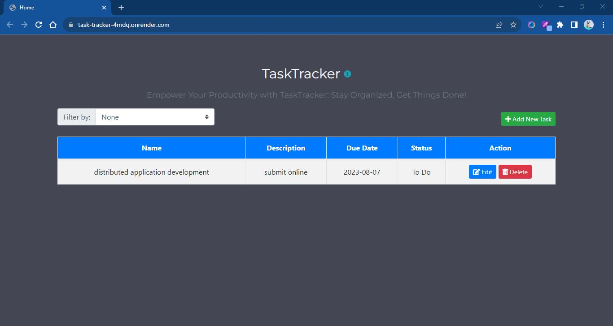

ePortfolio is an online portfolio to display myself. The website showcases my personal information, skills, projects, education background, work experience, and contact information.
• Programming Language: HTML, CSS, JavaScript
• Framework: Bootstrap, W3
• Tool: Microsoft Visual Studio Code
Live Site
FundFlow is a PHP-based web application for managing financial commitments and goals. The application allows users to log in, view their commitments and goals, and log out.
• Programming Language: PHP
• Framework: Bootstrap
• Database: MySQL
• Tool: Microsoft Visual Studio Code
Live Site
TaskTracker is a comprehensive task management web service meticulously crafted to empower developers in seamlessly integrating efficient task management capabilities into their applications and websites. Leveraging this robust API, you can effortlessly create, update, and manage tasks programmatically, ensuring optimal productivity and organization. With TaskTracker, stay in control of your tasks and projects, providing an intuitive user experience for both individuals and teams alike.
• Programming Language: Java
• Framework: Spring Boot, Thymeleaf
• Database: MySQL
• Tool: Spring Tool Suite 4, Docker
Live Site